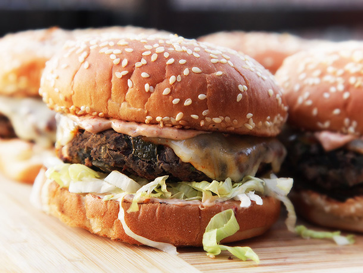
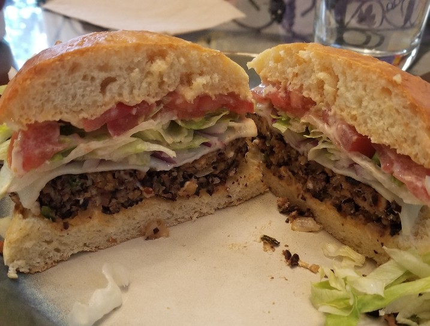

Black Bean Burger
Originally from: Serious Eats

Ingredients
- 2 (15-ounce) cans black beans, rinsed
- 1 onion, finely chopped
- 1 chopped poblano pepper, finely chopped
- 3 cloves garlic, finely chopped
- 1 chipotle chili in adobo sauce, finely chopped w/ ~1 tsp sauce
- 3/4 cup roated cashews
- 1/2 cup crumbled feta cheese
- 2 Tbl mayo
- 1 egg
- 3/4 cup panko bread crumbs
Directions
- Spread black beans in single layer on foil lined baking sheet and bake in 350° oven for 20 minutes.
- Sauté onions and poblanos until soft, adding garlic and chipotle near end. Transfer to large bowl.
- Pulse cashews in food processor until right size. Add to bowl.
- Pulse beans and feta in food processor (beans should have cooled some first) then add to bowl as well.
- Add mayo, egg, bread crumbs, salt, and pepper. Combine with hands.
- Form into patties and cook.
Notes
-
2020-06-21 - Made according to recipe, using homemade chipotle mayo in place of plain. Made decent sized patties, and taste / texture was good. Feels like black bean patty - does not try to imitate beef, but is a good different.
